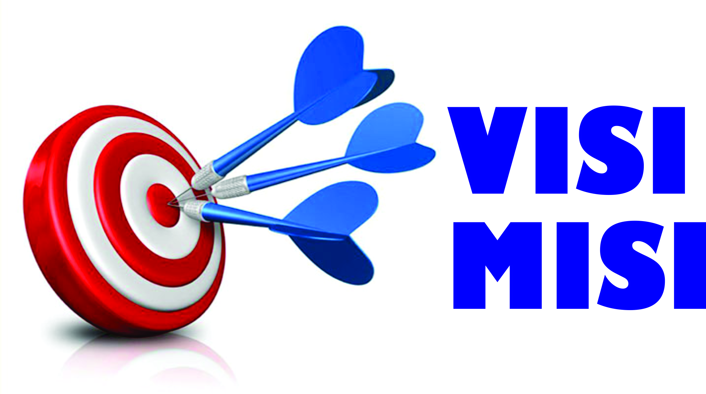

Memajukan Pikiran, Mentransformasi Masa Depan
Selamat datang di universitas kami, di mana visi kami adalah untuk memajukan pikiran dan mentransformasi masa depan. Kami memahami bahwa setiap individu memiliki potensi luar biasa yang dapat ditingkatkan melalui pendidikan berkualitas dan lingkungan yang mendukung.
Misi kami adalah menyediakan pendidikan yang inspiratif, merangsang inovasi, dan membentuk para pemimpin masa depan yang tidak hanya kompeten dalam bidang akademis mereka tetapi juga peduli terhadap masyarakat dan lingkungan.
Program Studi Unggulan
Ilmu Komputer
90%
Manajemen Bisnis
85%
Ilmu Pengetahuan Alam
78%
Seni dan Desain
92%
Kesehatan dan Kedokteran
88%
Fasilitas Unggulan
- Laboratorium Teknologi Terkini
- Perpustakaan Digital
- Pusat Olahraga dan Rekreasi
- Studio Seni dan Desain
- Rumah Sakit Pendidikan
Keberlanjutan dan Lingkungan
Kami berkomitmen untuk menciptakan lingkungan kampus yang berkelanjutan dan ramah lingkungan. Dengan program penanaman pohon, penggunaan energi terbarukan, dan kurikulum berfokus keberlanjutan, kami membawa visi kami ke dalam tindakan sehari-hari.